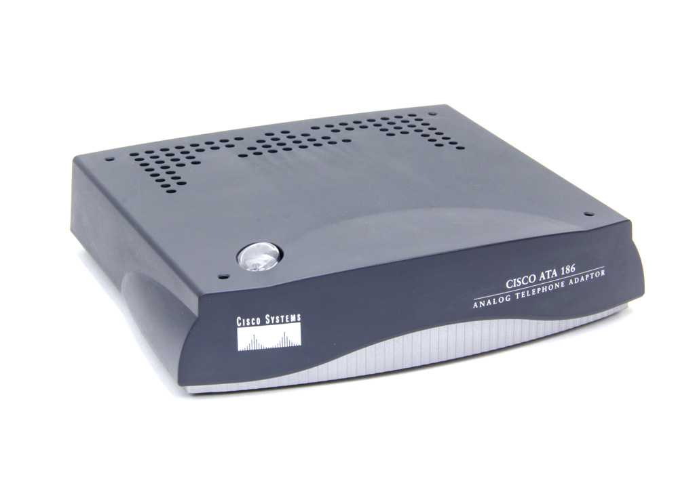

Голосовой шлюз Cisco ATA 186 - это устройство, которое может превратить два обычных аналоговых телефона с тоновым набором в два SIP-телефона. Телефоны подключаются к портам FXS, а сам шлюз - в сеть Ethernet.
В руководстве администратора описаны различные способы настройки шлюза: через веб-интерфейс, с помощью телефона с тоновым набором и посредством протоколов DHCP и TFTP. Наиболее интересным способом настройки мне показалась настройка через протоколы DHCP и TFTP.
Предположим, что имеется шлюз, который ранее где-то использовался и текущие настройки которого нам не известны. Для начала нужно сбросить его к заводским настройкам. Для этого подключим телефонный аппарат с тоновым набором в первый порт, поднимем трубку и нажмём кнопку на корпусе шлюза. Шлюз должен начать воспрозводить зацикленное голосовое меню. Наберём номер 322873738# (номер соответствует буквам FACTRESET) и подтвердим сброс нажатием *. Если вместо * нажать #, то действие будет отменено и шлюз опять начнёт воспроизводить голосовое меню.
Шлюз со сброшенными настройками будет запрашивать сетевые настройки у DHCP-сервера. DHCP-сервер среди прочих настроек может сообщить шлюзу IP-адрес TFTP-сервера, с которого шлюз может запросить уже все остальные свои настройки. По сути, для удалённой настройки таким способом нужно знать только MAC-адрес шлюза, который написан на корпусе шлюза.
Установим на сервер, который будет использоваться для раздачи настроек шлюзам, DHCP-сервер:
# apt-get install isc-dhcp-server
Пропишем в файл /etc/default/isc-dhcp-server список интерфейсов, на которых DHCP-сервер будет ожидать запросы:
INTERFACES="br0"
Пропишем в файл /etc/dhcp/dhcpd.conf следующие настройки:
subnet 169.254.254.0 netmask 255.255.255.0 { # Сеть, настройки которой описаны ниже
range 169.254.254.2 169.254.254.254; # Диапазон выдаваемых IP-адресов
option routers 169.254.254.1; # Маршрут по умолчанию
option broadcast-address 169.254.254.255; # Адрес для широковещательных рассылок
option domain-name "stupin.su"; # Доменное имя, выдаваемое DHCP-клиентам
option domain-name-servers 169.254.254.1; # DNS-сервер, выдаваемый клиентам
option ntp-servers 169.254.254.1; # NTP-сервер, выдаваемый клиентам
option time-offset 18000; # Часовой пояс - секунды, прибавляемые ко времени UTC
# 18000 секунд - это 5 часов, Asia/Yekaterinburg
option tftp-server-name "169.254.254.1"; # TFTP-сервер
default-lease-time 86400; # Время аренды выданного IP-адреса (сутки)
max-lease-time 172800; # Максимальное время аренды IP-адреса (2 суток)
}
А для того, чтобы шлюзу всегда выдавался один и тот же адрес, можно вписать в тот же файл ещё одну секцию. В реальных условиях это может быть не оправданно, т.к. при большом количестве шлюзов лучше сэкономить IP-адреса на тех шлюзах, которые давно не появляются в сети. Сделать это можно вот так:
host ata1 {
hardware ethernet 00:25:45:94:96:ab;
fixed-address 169.254.254.8;
}
Теперь перезапустим DHCP-сервер, чтобы его настройки вступили в силу:
# systemctl restart isc-dhcp-server.service
В качестве TFTP-сервера я воспользуюсь tftpd-hpa, настройку которого я описывал ранее в заметке Настройка TFTP-сервера tftpd-hpa.
Чтобы подготовить настройки шлюза, нужно обзавестись архивом с прошивкой. В моём случае это архив ata_03_02_01_sip_050616_a.zip. Внутри него кроме прошивки имеются пример файла конфигурации sip_example.txt с подробными комментариями, программа cfgfmt.linux, которая умеет преобразовывать этот файл в двоичный и файл ptag.dat, в котором хранятся правила преобразования текстового файла конфигурации в двоичный.
Можно скопировать файл sip_example.txt в файл с именем ata<MAC-адрес>.txt и отредактировать настройки. Впрочем, можно создать файл самостоятельно. Первой строчкой файла должна быть строчка "#ata".
Для начала создадим файл ata0025459496ab.txt, который заставит шлюз обновить свою прошивку:
#ata dhcp:1 UseTftp:1 upgradecode:3,0x301,0x0400,0x0200,169.254.254.1,69,0x050616A,ATA030201SIP050616A.zup
Имя файла прошивки ATA030201SIP050616A.zup задаётся в последнем параметре. Цифры 030201 соответствуют версии прошивки 3.2.1. SIP указывает на протокол (имеются также варианты для протоколов SCCP и MGCP). 050616A - это идентификатор прошивки, его нужно указать в параметре перед именем прошивки, записав в виде 0x050616A. Ещё два параметра - это IP-адрес и порт TFTP-сервера (169.254.254.1 и 69). Если нужно обновить прошивку, то первым параметром нужно указать 3. Для отключения обновления прошивки нужно указать 0.
Осталось преобразовать файл с настройками в двоичный вид при помощи следующей команды:
# cfgfmt.linux -tptag.dat -sip ata0025459496ab.txt ata0025459496ab
Теперь можно перейти в браузере по ссылке http://169.254.254.8/refresh, чтобы шлюз скачал настройки и обновил прошивку.
Чтобы защитить веб-интерфейс паролем, можно задать такую настройку:
UIPassword:123456
Поскольку шлюз почему-то не использует настройку часового пояса, полученную по DHCP, можно задать эту настройку в файле конфигурации:
TimeZone:5
Для подробного журналирования всех событий, происходящих на шлюзе можно вписать в файл настройки, задающие адрес сервера Syslog и указать число, 8 бит которого соответствуют 8 типам разных событий:
SyslogIP:169.254.254.1.514 SyslogCtrl:0x000000ff
Для настройки подключения первого телефона к SIP-серверу нужно задать следующие настройки:
Proxy:169.254.254.1:5060 UID0:1000 PWD0:password SIPRegOn:1
Proxy задаёт IP-адрес и порт SIP-сервера. UID0 задаёт имя пользователя SIP-сервера. PWD0 задаёт пароль пользователя на SIP-сервере. SIPRegOn включает регистрацию на SIP-сервере.
Чтобы понять, применились ли те или иные настройки, можно воспользоваться сниффером и прослушивать трафик между шлюзом и соответствующим сервером.
Если настроено обновление прошивки, то прослушивая трафик между TFTP-сервером и шлюзом, можно увидеть, как шлюз последовательно запрашивает файл с настройками, а затем - прошивку:
root@stupin:/var/tftp# tcpdump -npi br0 host 169.254.254.8 and udp port 69 tcpdump: verbose output suppressed, use -v or -vv for full protocol decode listening on br0, link-type EN10MB (Ethernet), capture size 262144 bytes 22:02:55.854073 IP 169.254.254.8.12200 > 169.254.254.1.69: 24 RRQ "ata0025459496ab" octet 22:02:56.697852 IP 169.254.254.8.12203 > 169.254.254.1.69: 32 RRQ "ATA030201SIP050616A.zup" octet
Прошивка не скачивается каждый раз. Шлюз сверяет идентификатор прошивки 050616A, указанной в файле конфигурации, с идентификатором текущей прошивки и не обновляет её, если идентификаторы совпадают.
Если DHCP-сервер выдаёт IP-адрес NTP-сервера, то можно увидеть, как шлюз после включения запрашивает время у NTP-сервера:
root@stupin:/var/tftp# tcpdump -npi br0 host 169.254.254.8 and udp port 123 12:53:17.057037 IP 169.254.254.8.14737 > 169.254.254.1.123: NTPv4, Client, length 48 12:53:17.057088 IP 169.254.254.1.123 > 169.254.254.8.14737: NTPv4, Server, length 48
Если в файле конфигурации шлюза определён адрес Syslog-сервера и включена отправка сообщений, то можно увидеть, как шлюз шлёт сообщения на Syslog-сервер:
root@stupin:/var/tftp# tcpdump -npi br0 host 169.254.254.8 and udp port 514 12:53:17.059984 IP 169.254.254.8.14738 > 169.254.254.1.514: SYSLOG daemon.debug, length: 210 12:53:17.080339 IP 169.254.254.8.14738 > 169.254.254.1.514: SYSLOG ftp.info, length: 69 12:53:22.066473 IP 169.254.254.8.14738 > 169.254.254.1.514: SYSLOG news.info, length: 78
Процесс регистрации шлюза на SIP-сервере будет выглядеть следующим образом:
root@stupin:/var/tftp# tcpdump -npi br0 host 169.254.254.8 and udp port 5060 12:53:17.134595 IP 169.254.254.8.5060 > 169.254.254.1.5060: SIP, length: 407 12:53:17.134801 IP 169.254.254.1.5060 > 169.254.254.8.5060: SIP, length: 541 12:53:17.166146 IP 169.254.254.8.5060 > 169.254.254.1.5060: SIP, length: 548 12:53:17.166421 IP 169.254.254.1.5060 > 169.254.254.8.5060: SIP, length: 585
По умолчанию шлюз использует для обмена голосовым трафиком по протоколу RTP UDP-порт 16384. Увидеть обмен голосовым трафиком в процессе разговора можно вот так:
root@stupin:/var/tftp# tcpdump -npi br0 host 169.254.254.8 and udp port 16384 12:58:14.121126 IP 169.254.254.1.18032 > 169.254.254.8.16384: UDP, length 172 12:58:14.122525 IP 169.254.254.8.16384 > 169.254.254.1.18032: UDP, length 172 12:58:14.132306 IP 169.254.254.8.16384 > 169.254.254.1.18032: UDP, length 13 12:58:14.141120 IP 169.254.254.1.18032 > 169.254.254.8.16384: UDP, length 172 12:58:14.161121 IP 169.254.254.1.18032 > 169.254.254.8.16384: UDP, length 172